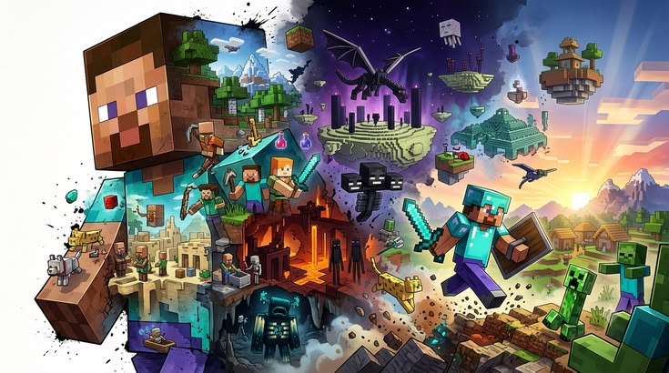

Bem-vindo ao mundo do Minecraft!
O Minecraft é um jogo de construção e aventura em um mundo aberto, onde você pode explorar, criar e sobreviver. Com gráficos em blocos e infinitas possibilidades, o jogo permite que você construa desde simples casas até complexas cidades.
Descubra diferentes biomas, enfrente monstros e animais, e use sua criatividade para construir o que quiser. O Minecraft é um jogo que estimula a imaginação e oferece uma experiência única a cada partida.
O que você vai encontrar aqui?
Conheça a história do jogo, seus personagens, os diferentes biomas e dicas para sobreviver nesse incrível mundo de blocos.
Explore, construa e sobreviva!
Você pode jogar no modo Sobrevivência, coletando recursos e enfrentando perigos, ou no modo Criativo, usando sua imaginação para construir o que quiser.
O que você encontrará neste site?
- Os principais biomas do Minecraft.
- Os monstros e animais do jogo.
- Construções incríveis feitas com blocos.
- Dicas para sobreviver e evoluir no jogo.
Prepare suas ferramentas e comece sua aventura!
